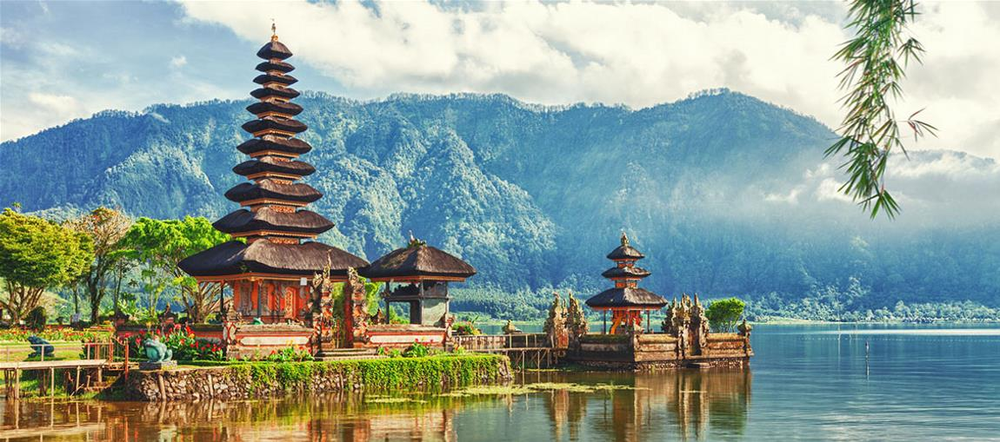

Detalii despre Bali
Bali, cunoscută și sub numele de "Insula Zeilor", este o destinație turistică fascinantă situată în arhipelagul Indoneziei. Această insulă fermecătoare atrage anual milioane de vizitatori din întreaga lume datorită peisajelor sale idilice, plajelor spectaculoase, culturii bogate și spiritualității profunde.
Cu o combinație unică de frumusețe naturală, temple antice, artă, dans și ospitalitate caldă, Bali oferă o experiență de călătorie memorabilă pentru oricine își dorește să descopere o cultură exotica și peisaje de vis.
